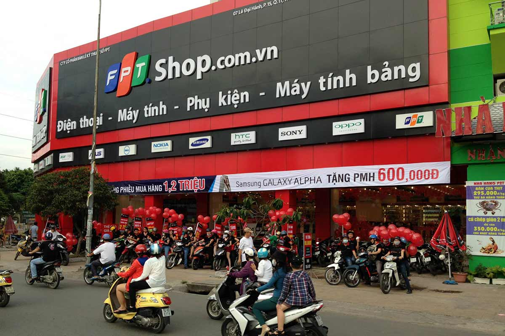
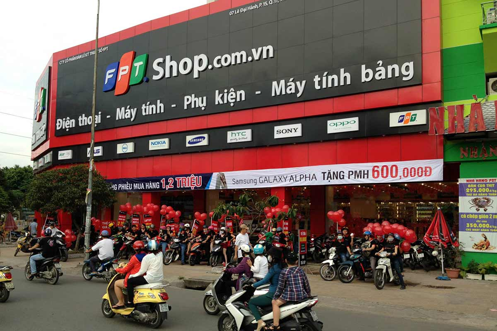

Được thành lập vào tháng 8/2007, FPT Shop là chuỗi cửa hàng bán lẻ chuyên về các sản phẩm kỹ thuật số như Điện thoại di động, Máy tính bảng, Máy tính xách tay và phụ kiện điện tử ... FPT Shop là trung tâm bán lẻ đầu tiên của Việt Nam được cấp chứng chỉ ISO 9001: 2000 quản lý chất lượng theo tiêu chuẩn quốc tế.
Từ ngày 25/8/2015, là đại lý ủy quyền chính thức của Apple tại Việt Nam, FPT Shop chính thức nhập khẩu trực tiếp iPhone và iPad và mở rộng thêm MacBook và Apple watch vào tháng 8/2016. Điều này đồng nghĩa với việc FPT Retail đã nhập khẩu tất cả sản phẩm từ Apple.
Bên cạnh chuỗi bán lẻ FPT Shop, công ty FPT Retail còn có một chuỗi bán lẻ đạt chuẩn cao cấp nhất của Apple ở cấp độ APR (Apple Premium Reseller) với thương hiệu là F.Studio by FPT, chuyên doanh các sản phẩm Apple chính hãng với dịch vụ chăm sóc khách hàng 6 sao.
Như vậy, FPT Retail đã trở thành công ty duy nhất có chuỗi bán lẻ với đầy đủ mô hình cửa hàng của Apple bao gồm chuỗi bán lẻ mang thương hiệu F.Studio by FPT gồm 2 cấp độ APR (Apple Premium Reseller) và AAR (Apple Authorised Reseller).
Định hướng của FPT Shop không chỉ cung cấp cho khách hàng với các sản phẩm chính hãng mới nhất, chất lượng nhất mà còn là nơi để khách hàng trải nghiệm sản phẩm thoải mái dưới sự tư vấn của đội ngũ nhân viên và kỹ thuật được tào tạo bài bản. Điểm khác biệt của FPT Shop còn là các chính sách hậu mãi riêng biệt như Bảo hành Vàng: Bảo hành cho cả trường hợp bị rơi vỡ, vào nước, chính sách 1 đổi 1 trong vòng 30 ngày, ….
Tính đến tháng 6/2016, FPT Shop đã có hơn 350 cửa hàng trên 63 tỉnh thành trong đó có 60 cửa hàng đã được Apple đưa vào danh sách đại lý Apple ủy quyền toàn cầu và chính thức được hiển thị tại trang http://www.apple.com

 
